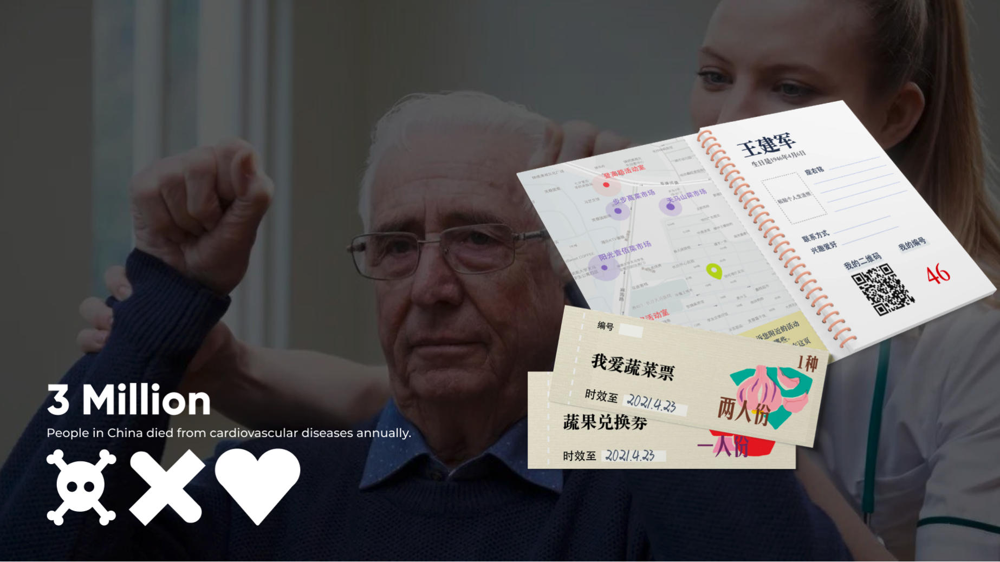
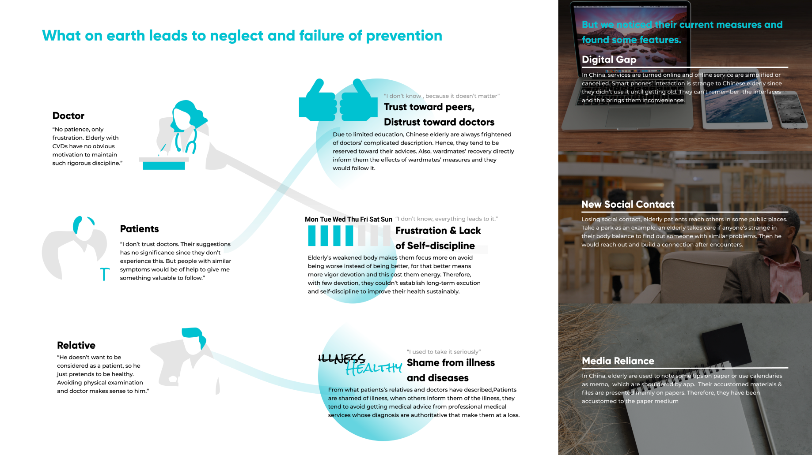
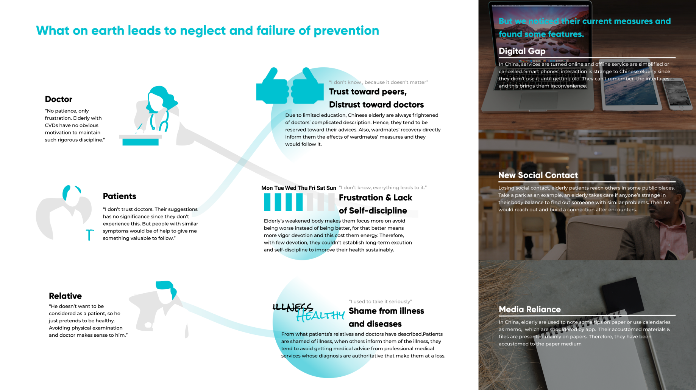
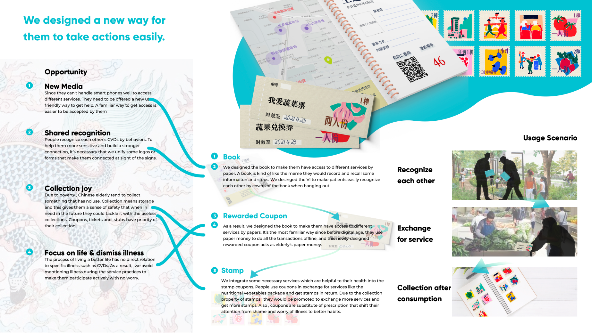
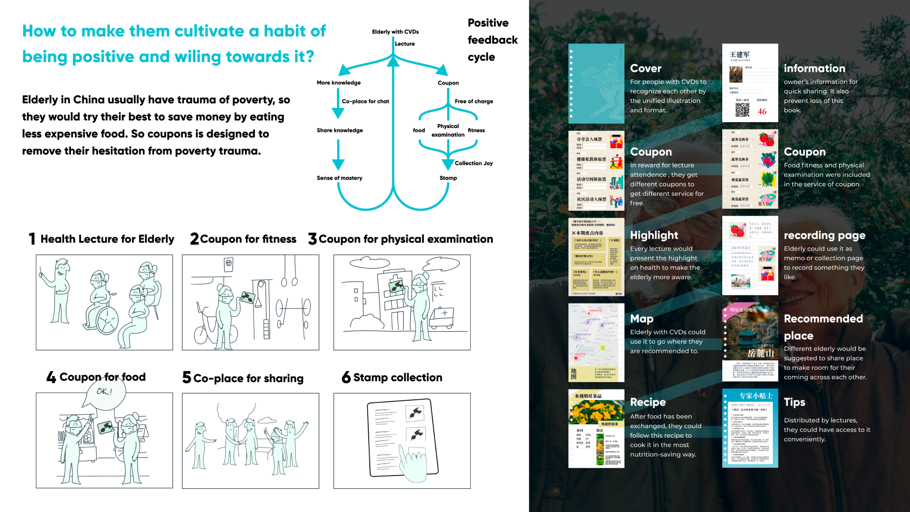
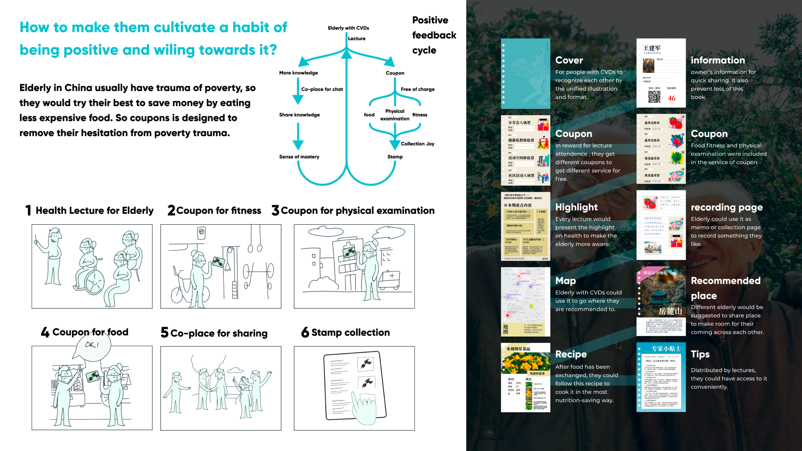

Introduction
City Health Book is a low-tech service design that is accessible for elderly with cardiovascular diseases. It integrates accessible social services through low-tech booklets, stamps to help Chinese elderly prevent themselves from cardiovascular diseases, mutually help within patient communities, and cultivate healthcare habits.
City Health Book is a low-tech service design that is accessible for elderly with cardiovascular diseases. It integrates accessible social services through low-tech booklets, stamps to help Chinese elderly prevent themselves from cardiovascular diseases, mutually help within patient communities, and cultivate healthcare habits.

Background & Problem Space
2. Social negligence
3. Habit cultivation
Cardiovascular diseases(CVDs) are one of leading causes of deaths. Globally, over half survived patients lose self-care ability. While edging technologies helped a lot, Chinese elderly cannot access it efficiently. Also, the discrimination and negligence for CVDs make them reluctant to seek help. These difficulty hinders them from adjusting to routines good for prevention and improvement. The interwound problems frames through 3 parts.
1. Digital gap2. Social negligence
3. Habit cultivation
User Research & insights

We conducted qualitative research with patients, doctors, and patient relatives. These patient-centered communities uncovers their treatment within disease, caregiving after diseases and self help on disease.

Through all statements from participants, our research discovers 3 insights:
Elderly patients hold trust toward peers with similar conditions, while they distrust doctors.
Elderly is too frustrated to cultivate self discipline.
Elderly patients are shamed from illness and diseases.
Elderly patients hold trust toward peers with similar conditions, while they distrust doctors.
Elderly is too frustrated to cultivate self discipline.
Elderly patients are shamed from illness and diseases.
Given that elderly rely more on traditional media such as paper artifacts, we embed services into a booklet. The booklet includes intro page, coupons, and stamps that enables their peer communication, redeeming service, and habit cultivation.

Integral Design

This booklet forms a good flow for elderly patients to cultivate a habit of making self management.

Design Showcase
This booklet forms a good flow for elderly patients to cultivate a habit of making self management.